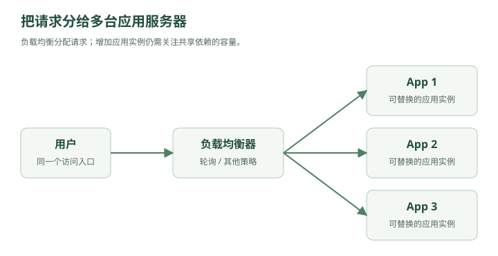

2026 年，程序员林默做了个网站。
功能极其简单：
用户发一条动态，别人可以查看。
类似一个极简版微博。
林默看了一眼需求：
POST /posts
GET /posts/{id}
“这还不简单？”
于是他租了一台服务器。
服务器里面同时跑着：
Nginx
↓
Spring Boot
↓
MySQL
甚至一开始，Nginx 都没有。
就是：
用户
↓
Spring Boot
↓
MySQL
用户发动态：
INSERT INTO post(user_id, content)
VALUES (10001, '今天天气不错');
用户查看动态：
SELECT *
FROM post
WHERE id = 123;
网站上线。
第一天，12 个用户。
第二天，37 个用户。
一个星期以后，103 个用户。
服务器 CPU：
3%
MySQL：
毫无压力
林默非常满意。
他甚至产生了一种错觉：
“系统设计不就是 CRUD 吗？”
一、第一个问题：到底什么叫“系统设计”？
三个月后，公司来了个架构师老周。
老周问：
“如果明天有 100 万用户呢？”
林默回答：
“换一台更好的服务器。”
“1000 万呢？”
“再换。”
“1 亿呢？”
“……”
老周笑了。
然后在白板上写下一句话：
系统设计，本质上是在各种约束下，让系统继续工作。
你设计的从来不只是代码。
而是整个系统：
用户
│
▼
网络
│
▼
服务器
│
├── CPU
├── 内存
├── 磁盘
│
▼
数据库
│
▼
其他服务
任何地方都有可能成为瓶颈。
所以以后遇到系统设计题，第一件事情永远不是：
“我要不要上 Redis？”
而是：
“这个系统的压力到底在哪里？”
二、第一场灾难：服务器扛不住了
半年后。
这个网站突然火了。
某天晚上，一个明星注册了账号。
他发了一条动态。
瞬间，大量用户涌入。
服务器监控：
QPS: 100
CPU: 15%
QPS: 500
CPU: 43%
QPS: 1000
CPU: 78%
QPS: 1500
CPU: 99%
然后——
Connection timeout
Connection timeout
Connection timeout
网站挂了。
林默冲进机房：
“数据库炸了？”
老周摇头。
“不是。”
“那是什么？”
“Spring Boot 服务器自己扛不住了。”
这时候你第一次遇到系统设计里的核心指标：
QPS
QPS：
Queries Per Second
在本书的 Web 场景中，用它表示每秒请求数；数据库语境中的 QPS 则通常指每秒查询数。
假设：
100 万用户
每个用户每天请求：
100 次
那么一天：
1亿次请求
平均 QPS：
100,000,000 / 86400
≈ 1157
但现实流量不会平均。
凌晨三点：
200 QPS
晚上八点：
8000 QPS
明星突然官宣：
50000 QPS
所以系统设计不能只看：
平均 QPS。
还要看：
峰值 QPS。
这就是系统设计题为什么经常先让你“估算流量”。
因为你连敌人有多少都不知道，就开始造城墙，没有意义。
三、最简单的解决方案：氪金
林默说：
“服务器性能不够，那我买台更好的。”
原服务器：
4 Core
8 GB
换成：
32 Core
128 GB
网站重新恢复。
这在系统设计里面叫：
Vertical Scaling
纵向扩展。
也就是：
把机器变强。
比如：
4核 → 16核
16GB → 64GB
普通SSD → NVMe
这个方案最大的优点就是：
简单。
代码甚至不用改。
但老周问：
“如果这台机器也满了呢？”
林默：
“买 128 核。”
“再满呢？”
“……”
问题出现了。
单台机器不可能无限增强。
而且还有一个更恐怖的问题。
老周走到服务器旁边。
啪。
拔掉电源。
整个网站：
DOWN
林默：
“？？？”
老周说：
“你这个系统现在有一个致命问题。”
单点故障
Single Point of Failure。
你的整个网站依赖这一台服务器。
它挂：
整个系统挂
硬盘坏：
整个系统挂
机房断电：
整个系统挂
升级重启：
整个系统挂
所以，真正的大型系统不会只想着：
把一台机器变得越来越强。
而会开始考虑：
能不能增加机器？
四、第二台服务器出现了
第二天。
林默又买了一台服务器。
现在：
Server A
Server B
两台服务器都部署：
Spring Boot
林默非常满意。
“现在有机会分担更多请求。”
老周问：
“用户请求发给谁？”
林默沉默了。
假设：
www.example.com
用户访问这个域名。
到底进入：
Server A
还是：
Server B
？
于是，系统里出现了一个新的角色。
五、负载均衡器登场
老周在两台服务器前面放了一台机器。

查看文字版示意
┌→ Server A
用户 → LB ───┤
└→ Server B
LB：
Load Balancer
负载均衡器。
它负责：
把请求分配给不同服务器。
比如：
请求1 → A
请求2 → B
请求3 → A
请求4 → B
最简单的算法：
Round Robin
轮询。
A → B → C → A → B → C
于是：
原来：
10000 QPS
↓
Server A
现在：
10000 QPS
↓
Load Balancer
↓
┌─────┴─────┐
5000 5000
↓ ↓
A B
压力被分散。实际吞吐提升还取决于数据库、网络、负载均衡器和请求分布，并不保证随机器数量线性增长。
如果还不够？
继续加：
Load Balancer
│
┌────────┼────────┐
▼ ▼ ▼
Server A Server B Server C
再不够：
A B C D E F G H ...
这就叫：
Horizontal Scaling
水平扩展。
不是：
把一台服务器变成超级赛亚人。
而是：
增加服务器数量。
六、这里藏着系统设计的第一条大规律
林默盯着架构图：
┌── App 1
Client → LB ────────┼── App 2
├── App 3
└── App 4
突然意识到一个问题。
“所以以后服务器不够，我就一直加机器？”
老周说：
“如果你的服务可以水平扩展，是的。”
这句话非常重要。
因为后面的：
负载均衡
Redis Cluster
MySQL 分库分表
Kafka Partition
Elasticsearch Shard
对象存储
CDN
背后其实反复在做同一件事：
一台机器扛不住，就想办法把工作拆给很多机器。
这几乎是整个分布式系统的起点。
七、可是第三场灾难马上来了
林默觉得自己已经懂系统设计了。
现在架构：
┌→ Server A
用户 → Nginx ────┤
└→ Server B
│
▼
MySQL
Server A 和 Server B 都可以处理登录。
某天，一个用户登录。
请求被负载均衡发给：
Server A
Server A 创建 Session：
sessionId = abc123
abc123 → userId 9527
存在哪里？
服务器 A 的内存。
下一秒。
用户请求：
GET /profile
负载均衡：
→ Server B
Server B 查自己的内存：
abc123？
没有。
于是返回：
401 Unauthorized
用户：
“我刚登录怎么又让我登录？？？”
刷新一下。
请求到了 A。
登录了。
再刷新。
到了 B。
又掉登录。
于是出现了极其魔幻的现象：
刷新一次：已登录
刷新一次：未登录
刷新一次：已登录
刷新一次：未登录
林默看傻了。
老周在白板写下：
当你从一台服务器变成多台服务器以后，很多原本理所当然的事情都会失效。
因为以前：
服务器 = 世界
现在：
服务器 A 的内存
≠
服务器 B 的内存
这就是分布式系统真正开始的地方。
林默问：
“那 Session 怎么办？”
老周写出了三个方案：
方案一：Sticky Session
方案二：Session Replication
方案三：共享 Session
然后，在第三个方案下面写了一个名字：
Redis
林默愣了一下。
“Redis？”
老周点头。
“从下一章开始，你会发现系统设计里几乎所有中间件的出现，都不是因为架构师喜欢炫技。”
而是系统先出了问题，然后才有人发明东西解决它。
第一章结束：你现在只需要记住一张图
阶段 1：
User
↓
App
↓
MySQL
阶段 2：单机性能不足
User
↓
更强的 App
Vertical Scaling
阶段 3：单机存在极限
┌→ App
User → LB ────┼→ App
└→ App
Horizontal Scaling
阶段 4：分布式问题出现
App A memory ≠ App B memory
↓
状态共享问题
这实际上已经串起了几个面试高频概念：
QPS → 峰值流量 → 单点故障 → 垂直扩展 → 水平扩展 → 负载均衡 → 无状态服务 → 分布式状态问题。
下一章可以顺着这个事故继续：《消失的登录状态——Redis 为什么会出现在系统架构里》。
之后这条故事线会自然把 Redis 缓存 → 缓存穿透/击穿/雪崩 → MySQL 主从 → 读写分离 → 分库分表 → MQ 削峰 → 限流/熔断/降级 → CDN → 一致性 → CAP → 分布式事务 一路串起来。